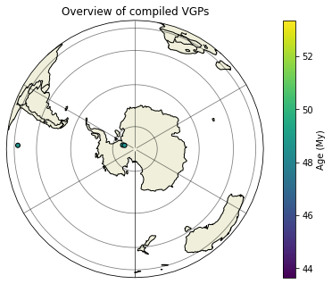

Figure 1 - Compile data notebook
Contents
Figure 1 - Compile data notebook#
This notebook iterates through each paleomagnetic record (datasheet) of the vgp database, extracts data which meet user-specified criteria, and appends them to a new dataframe for later processing (to generate an APWP).
import os
import numpy as np
import pandas as pd
pd.set_option('display.max_columns', None)
from pmagpy import ipmag, pmag
import matplotlib.pyplot as plt
import cartopy.crs as ccrs
import cartopy.feature as cfeature
import seaborn as sns
from tqdm import tqdm
import matplotlib.gridspec as gridspec
from vgptools.auxiliar import get_files_in_directory
from vgptools.utils_compilation import (generates_compilation, split_datasheet,
recalc_vgps, go_reverse,
get_alpha95, get_k,
get_ages)
Gather study files in order to generate a dataset of VGPs#
We retrieve all the spreadsheet files corresponding to different studies for which site level data are compiled.
current_path = os.getcwd()
data_path_VGP = current_path + '/vgp_database'
files_names = get_files_in_directory(data_path_VGP)
xlsx_file_names = [os.path.splitext(os.path.basename(open(file,'r').name))[0] for file in files_names if file.endswith('.xlsx')]
paths = [file for file in files_names if file.endswith('.xlsx')]
df_files = pd.DataFrame({'path': paths, 'name_xlsx': xlsx_file_names})
2. Subselect VGPs that were originally taken into account to the calculation of the paleomagnetic pole.#
Note: the column df_vgp_unfiltered['in_study_pole'] labels with 0 the VGPs that were not taken into account in the Paloemagnetic Pole.
We can group the paleopoles within the same study with different numbers in the same column.
def original_selection(df_unfiltered, df_poles_original):
'''
input: Pass an unfiltered DF
output: Selected entries that were considered by their authors to the calculation of PPs.
Note: This is achieved taking advantage on the values in column df_unfiltered[`in_study_pole`]. Sero
valued entries were discarder and integers labels different poles within the same study.
'''
df_unfiltered['keep'] = np.nan
df_unfiltered['keep'] = df_unfiltered.apply(lambda row: True if row.in_study_pole != 0 else row.keep, axis = 1)
df_filtered = df_unfiltered.loc[df_unfiltered['keep'] == True]
# iterate through each study in order to recompute and store the paleomagnetic poles
df_pole_compilation = pd.DataFrame(data = None, columns = df_poles_original.columns)
for study, df_study in df_filtered.groupby('Study'):
# iterate through each study
for pole, df_pole in df_study.groupby('in_study_pole'):
ppole = ipmag.fisher_mean(dec = df_pole['vgp_lon_SH'].tolist(), inc = df_pole['vgp_lat_SH'].tolist()) # final paleopole
mean_site = ipmag.fisher_mean(dec = df_study['slon'].tolist(), inc = df_study['slat'].tolist())
if len(df_pole) == 1:
mean_site['inc'] = df_pole['slat'].values[0]; mean_site['dec'] = df_pole['slon'].values[0]
ppole['inc'] = df_pole['vgp_lat_SH'].values[0]; ppole['dec'] = df_pole['vgp_lon_SH'].values[0]
ppole['n'] = df_pole['n'].values[0]; ppole['k'] = df_pole['k'].values[0]; ppole['alpha95'] = df_pole['alpha95'].values[0]
df_pole_compilation = df_pole_compilation.append({'Study': study, 'pole': pole,
'slat': mean_site['inc'], 'slon': mean_site['dec'],
'Plat': ppole['inc'], 'Plon': ppole['dec'],
'N': ppole['n'], 'K': ppole['k'], 'A95': ppole['alpha95'],
'min_age': df_pole.min_age.min(), 'max_age': df_pole.max_age.max(),
'mean_age': (df_pole.max_age.max() + df_pole.min_age.min()) / 2 },
ignore_index = True)
df_pole_compilation = df_pole_compilation[['Study','pole','N','K','A95','slat','slon','Plat','Plon','min_age','max_age','mean_age']]
return df_filtered, df_pole_compilation
df_filtered, df_pole_compilation = original_selection(df_vgp_unfiltered, df_poles_original)
Study locations and VGPs by age#
proj = ccrs.Orthographic(central_longitude=0.0, central_latitude=-90.0)
proj1 = ccrs.LambertConformal()
plt.figure(figsize=(12,10))
ax1 = plt.subplot(2, 2, 1, projection = proj1)
ax1.patch.set_visible(False)
ax1.set_extent([-135, -55, 5, 68], ccrs.Geodetic())
ax1.add_feature(cfeature.BORDERS)
gl = ax1.gridlines(crs=ccrs.PlateCarree(), draw_labels=False,
linewidth=0.8, color='gray', alpha=0.5, linestyle='-')
gl.ylabels_left = True
ax1.add_feature(cfeature.LAND)
ax1.add_feature(cfeature.COASTLINE)
ax1.stock_img()
plt.title('Overview map of North America')
plt.scatter(
df_pole_compilation.slon,
df_pole_compilation.slat,
c = df_pole_compilation.mean_age,
edgecolors= "black", marker = "o",
cmap="viridis",
transform=ccrs.PlateCarree(),
)
plt.tight_layout()
ax2 = plt.subplot(2, 2, 2, projection=proj)
ax2.set_title('Overview of compiled VGPs')
ax2.add_feature(cfeature.BORDERS)
gl = ax2.gridlines(crs=ccrs.PlateCarree(), draw_labels=False,
linewidth=0.8, color='black', alpha=0.5, linestyle='-')
gl.ylabels_left = True
ax2.add_feature(cfeature.LAND)
ax2.add_feature(cfeature.COASTLINE)
ax2.stock_img()
plt.title('Overview of compiled VGPs')
s = plt.scatter(
df_filtered.vgp_lon_SH,
df_filtered.vgp_lat_SH,
c = df_filtered.mean_age,
edgecolors= "black", marker = "o", s = 25,
cmap="viridis",
transform=ccrs.PlateCarree(),
)
plt.tight_layout()
plt.colorbar(s, fraction=0.035).set_label("Age (My)")

Age distribution of VGPs#
fig = plt.figure(figsize=(15,3))
plt.title('Age distribution of compiled VGPs')
plt.ylabel('Number of compiled VGPs')
plt.xlabel('Mean Age')
sns.histplot(data = df_filtered, x = 'mean_age', bins = 80, legend = False)
# sns.distplot(df_filtered['mean_age'], bins=100)
<AxesSubplot:title={'center':'Age distribution of compiled VGPs'}, xlabel='Mean Age', ylabel='Number of compiled VGPs'>
Recomputed poles#
df_pole_compilation[df_pole_compilation['pole'] == 1]
| Study | pole | N | K | A95 | slat | slon | Plat | Plon | min_age | max_age | mean_age | |
|---|---|---|---|---|---|---|---|---|---|---|---|---|
| 0 | Absaroka_volcanics | 1 | 19 | 10.051542 | 11.140298 | 44.613899 | 250.051065 | -83.364268 | 358.641493 | 48.0 | 49.0 | 48.5 |
| 3 | Beaver_River_intrusions | 1 | 21 | 44.972756 | 4.792312 | 60.238151 | 234.652209 | -79.313242 | 327.669841 | 40.5 | 43.5 | 42.0 |
| 4 | Bighorn_Basin_sediments | 1 | 59 | 10.64057 | 5.954672 | 44.459816 | 251.809627 | -81.549042 | 2.761738 | 52.54 | 59.237 | 55.8885 |
| 5 | Bishop_tuff | 1 | 47.0 | 127.0 | 1.9 | 37.67 | 241.25 | -80.164116 | 314.290252 | 0.7661 | 0.7679 | 0.767 |
| 6 | Bitterroot_Dome_intrusions | 1 | 11 | 34.082686 | 7.93379 | 46.1908 | 245.543303 | -72.178647 | 344.432968 | 46.4 | 55.5 | 50.95 |
| 8 | Central_Mexico_Plio-Pleistocene | 1 | 13 | 61.071911 | 5.347242 | 19.551706 | 260.39884 | -88.503095 | 154.996894 | 0.0 | 4.51 | 2.255 |
| 9 | Clear_Lake_volcanic_field | 1 | 3 | 5.300917 | 59.96619 | 38.961941 | 237.332338 | -84.889461 | 298.871431 | 0.84 | 1.37 | 1.105 |
| 10 | Coso_Range_volcanics | 1 | 2 | 16.165811 | 66.822315 | 35.944511 | 242.221048 | -73.775957 | 249.302652 | 0.83 | 1.31 | 1.07 |
| 11 | Dinan_Bay_lavas | 1 | 13 | 18.744472 | 9.832138 | 53.649138 | 233.320816 | -83.335839 | 324.273564 | 18.9 | 26.4 | 22.65 |
| 12 | Eastern_Alkaline_Province | 1 | 17 | 42.479588 | 5.536743 | 20.327289 | 262.723839 | -88.340153 | 267.711248 | 1.5 | 14.97 | 8.235 |
| 13 | Eastern_TMVB | 1 | 12 | 41.498053 | 6.817589 | 19.870126 | 261.47979 | -86.261559 | 296.937292 | 0.0 | 2.61 | 1.305 |
| 16 | Latir_volcanic_field | 1 | 48 | 5.806518 | 9.372501 | 36.797286 | 254.562507 | -76.331436 | 5.316146 | 25.17 | 28.5 | 26.835 |
| 18 | Long_Valley_Caldera_volcanics | 1 | 20 | 19.849724 | 7.51279 | 37.66906 | 241.135848 | -87.664063 | 11.142714 | 0.036 | 0.738 | 0.387 |
| 19 | Mariscal_Mtn_intrusions | 1 | 18 | 42.460473 | 5.366825 | 29.084778 | 256.813834 | -79.969242 | 5.260914 | 34.14 | 46.7 | 40.42 |
| 20 | Michoacan_Guanajuato_volcanic_field | 1 | 8 | 31.322757 | 10.051793 | 19.278857 | 257.651623 | -83.095837 | 42.690352 | 0.058 | 0.653 | 0.3555 |
| 21 | Mistastin_Lake_impact | 1 | 10 | 119.554561 | 4.436052 | 55.867008 | 296.613106 | -85.527833 | 300.997894 | 34.6 | 38.6 | 36.6 |
| 23 | Mogollon-Datil_volcanics | 1 | 61 | 17.54263 | 4.469516 | 33.312892 | 252.22946 | -81.946303 | 323.334539 | 21.0 | 44.0 | 32.5 |
| 25 | Monterey_intrusions | 1 | 6 | 31.998449 | 12.024477 | 38.377044 | 280.679485 | -87.635483 | 226.193142 | 47 | 47.9 | 47.45 |
| 27 | N_Montana_intrusions | 1 | 95 | 17.619208 | 3.557327 | 47.859843 | 249.866366 | -82.318756 | 358.457981 | 46.4 | 55.4 | 50.9 |
| 28 | Ramsay_Island_lavas | 1 | 37 | 18.102389 | 5.691059 | 52.555957 | 228.645082 | -83.297224 | 299.217499 | 35.9 | 41.1 | 38.5 |
| 29 | Rattlesnake_Hills_volcanics | 1 | 18 | 13.847359 | 9.634617 | 42.794979 | 252.690527 | -79.415317 | 326.075725 | 44.7 | 45.1 | 44.9 |
| 30 | Robinson_Antincline_intrusions | 1 | 16 | 25.350465 | 7.47087 | 46.2 | 249.5 | -77.484696 | 329.753861 | 48.0 | 52.6 | 50.3 |
| 31 | SW_USA_composite | 1 | 70 | 19.599863 | 3.92857 | 37.189825 | 245.324041 | -87.395003 | 342.960695 | 0.0 | 16.5 | 8.25 |
| 32 | San_Luis_Hills_volcanics | 1 | 23 | 13.982647 | 8.393792 | 37.167163 | 254.044728 | -79.716194 | 349.461783 | 25.7 | 31.0 | 28.35 |
| 33 | Sierra_de_Las_Cruces | 1 | 25 | 39.085457 | 4.689496 | 19.466979 | 260.553954 | -80.838128 | 336.59299 | 0.0 | 4.11 | 2.055 |
| 34 | Snake_River_Plain | 1 | 23 | 25.035633 | 6.171164 | 42.978649 | 246.353711 | -86.874229 | 187.769496 | 0.028 | 6.0 | 3.014 |
| 35 | Sonoma_volcanics | 1 | 26 | 20.006308 | 6.499616 | 38.430155 | 237.573685 | -80.322875 | 248.829844 | 2.5 | 8.17 | 5.335 |
| 36 | Stoddard_Mountain_laccolith | 1 | 19 | 56.544078 | 4.50215 | 37.517585 | 246.622478 | -83.758551 | 333.572807 | 20.2 | 21.96 | 21.08 |
| 37 | Tequila_volcanic_field | 1 | 17 | 27.503551 | 6.925343 | 20.832864 | 256.178936 | -85.421918 | 263.87237 | 0.079 | 1.448 | 0.7635 |
| 38 | Valles_Caldera_volcanics | 1 | 11 | 12.652025 | 13.354422 | 35.895497 | 253.436339 | -87.135817 | 218.526712 | 0.05 | 3.74 | 1.895 |
| 39 | Western_Central_TMVB | 1 | 10 | 42.97413 | 7.452964 | 20.366391 | 257.543486 | -86.738664 | 133.858048 | 0.0 | 2.58 | 1.29 |
fig = plt.figure()
proj = ccrs.Orthographic(central_longitude=0.0, central_latitude=-90.0)
ax = fig.add_axes([0, 0, 1, 1], projection = proj)
ax.patch.set_visible(False)
#ax.set_extent([-135, -55, 5, 68], ccrs.Geodetic())
ax.set_title('Overview of recomputed Poles')
ax.add_feature(cfeature.BORDERS)
gl = ax.gridlines(crs=ccrs.PlateCarree(), draw_labels=False,
linewidth=0.8, color='black', alpha=0.5, linestyle='-')
gl.ylabels_left = True
ax.add_feature(cfeature.LAND)
ax.add_feature(cfeature.COASTLINE)
# ax.stock_img()
# ax.set_global()
plt.scatter(
df_pole_compilation.Plon,
df_pole_compilation.Plat,
c = df_pole_compilation.mean_age,
edgecolors= "black", marker = "o", s = 25,
cmap="viridis",
transform=ccrs.PlateCarree())
for i in range(df_pole_compilation.shape[0]):
plt.annotate(df_pole_compilation.pole.tolist()[i], (df_pole_compilation.Plon.tolist()[i], df_pole_compilation.Plat.tolist()[i]), transform=ccrs.PlateCarree())
print(df_pole_compilation.shape[0])
plt.tight_layout()
plt.colorbar().set_label("Age (My)")
plt.show()
41

fig = plt.figure(figsize=(20, 9))
proj = ccrs.Orthographic(central_longitude=0.0, central_latitude=-90.0)
# ax.stock_img()
ax = plt.axes(projection=proj)
ax.add_feature(cfeature.BORDERS)
ax.gridlines()
ax.add_feature(cfeature.LAND)
ax.add_feature(cfeature.COASTLINE)
p1 = sns.scatterplot(x = df_pole_compilation['Plon'], y = df_pole_compilation['Plat'], hue = df_pole_compilation['pole'],
s=200, transform=ccrs.PlateCarree())
plt.legend(bbox_to_anchor=(1.02, 1), loc='upper left', borderaxespad=0)
<matplotlib.legend.Legend at 0x7f7f4cb66e90>
df_poles_original['Plat_SH'] = np.where( df_poles_original['Plat'] > 0, -df_poles_original['Plat'], df_poles_original['Plat'])
df_poles_original['Plon_SH'] = np.where( df_poles_original['Plat'] > 0,(df_poles_original['Plon'] - 180.) % 360., df_poles_original['Plon'])
pole_rec = df_pole_compilation[df_pole_compilation['Study'] == 'Absaroka_volcanics']
pole_original = df_poles_original[df_poles_original['Study'] == 'Absaroka_volcanics']
pole_original
| pole | name | slat | slon | N | dec | inc | k | alpha95 | f_corr | Plat | Plon | K | A95 | dp | dm | mean_age | min_age | 2sig_min | max_age | 2sig_max | uncer_dist | rock_typ_1 | rock_typ_2 | rock_typ_3 | R1 | R2a | R2b | R3 | R4 | R5a | R5b | R6 | R7 | pmag_ref | age_ref | pmag_comments | age_comments | Study | Unnamed: 38 | Plat_SH | Plon_SH | |
|---|---|---|---|---|---|---|---|---|---|---|---|---|---|---|---|---|---|---|---|---|---|---|---|---|---|---|---|---|---|---|---|---|---|---|---|---|---|---|---|---|---|---|
| 16 | 1.0 | Absaroka volcanics pole 1 | NaN | NaN | 19.0 | 349.9 | 61.8 | 14.7 | 8.4 | NaN | 83.5 | 177.4 | 10.2 | 10.1 | NaN | NaN | NaN | 48.0 | NaN | 49.0 | NaN | uniform | igneous | volcanic | basalt | 1.0 | 1.0 | 1.0 | 1.0 | 0.0 | 1.0 | 1.0 | 1.0 | 1.0 | Shive and Pruss (1977) | Harlan and Morgan (2010); | only AF demag appears to have been used (thus ... | NaN | Absaroka_volcanics | NaN | -83.5 | 357.4 |
| 17 | 2.0 | Absaroka volcanics pole 2 | NaN | NaN | 3.0 | NaN | NaN | NaN | NaN | NaN | NaN | NaN | NaN | NaN | NaN | NaN | NaN | 48.0 | NaN | 49.0 | NaN | uniform | igneous | volcanic | basalt | 1.0 | 1.0 | 0.0 | 1.0 | 0.0 | 1.0 | 1.0 | 0.0 | 1.0 | Re-calculated from Nyblade et al. (1986) [who ... | Harlan and Morgan (2010) | no mean direction / pole position calculated b... | crude age range provided by Harlan and Morgan ... | Absaroka_volcanics | NaN | NaN | NaN |
| 18 | 3.0 | Absaroka volcanics pole 3 | NaN | NaN | 22.0 | 347.6 | 59.2 | 21.8 | 6.8 | NaN | 80.8 | 145.9 | 14.0 | 8.6 | NaN | NaN | NaN | 45.0 | NaN | 54.0 | NaN | uniform | igneous | mixed | NaN | 1.0 | 1.0 | 1.0 | 1.0 | 1.0 | 1.0 | 1.0 | 1.0 | 1.0 | Harlan and Morgan (2010) | Harlan and Morgan (2010); but see age_comment | AF and thermal demagnetization; rock-magnetic ... | uniform age range estimated here is just a cru... | Absaroka_volcanics | NaN | -80.8 | 325.9 |
| 19 | 1+2+3 | Absaroka volcanics grand mean pole | NaN | NaN | 42.0 | NaN | NaN | NaN | NaN | NaN | 83.1 | 146.3 | 13.5 | 6.2 | NaN | NaN | NaN | 45.0 | NaN | 54.0 | NaN | uniform | igneous | mixed | NaN | 1.0 | 1.0 | 1.0 | 1.0 | 1.0 | 1.0 | 1.0 | 1.0 | 1.0 | Harlan and Morgan (2010) | Harlan and Morgan (2010); but see age_comment | seems to have dismissed two VGPs from the stud... | uniform age range estimated here is just a cru... | Absaroka_volcanics | Harlan and Morgan (2010); Shive and Pruss (197... | -83.1 | 326.3 |
fig = plt.figure(figsize=(20, 9))
proj = ccrs.Orthographic(central_longitude=0.0, central_latitude=-90.0)
# ax.stock_img()
ax = plt.axes(projection=proj)
ax.add_feature(cfeature.BORDERS)
ax.gridlines()
ax.add_feature(cfeature.LAND)
ax.add_feature(cfeature.COASTLINE)
ax.set_global()
sns.scatterplot(x = pole_rec['Plon'], y = pole_rec['Plat'], hue = pole_rec['pole'],
s=200, transform=ccrs.PlateCarree())
sns.scatterplot(x = pole_original['Plon_SH'], y = pole_original['Plat_SH'], color = 'r',
s=200, transform=ccrs.PlateCarree())
plt.legend(bbox_to_anchor=(1.02, 1), loc='upper left', borderaxespad=0)
<matplotlib.legend.Legend at 0x7f7f68f27ac0>
df_pole_compilation[df_pole_compilation['pole'] == 2]
df_filtered.head(2)
| name | fm./loc. | slat | slon | n | dec | inc | k | alpha95 | f_corr | VGP_lat | VGP_lon | K | A95 | dp | dm | mean_age | min_age | 2sig_min | max_age | 2sig_max | uncer_dist | rock_typ_1 | rock_typ_2 | rock_typ_3 | demag | struc_cont | rot_area | polarity | strat_group | ordering | synch_unit | in_study_pole | rej_crit | pmag_ref | age_ref | pmag_comments | age_comments | Unnamed: 38 | Study | VGP_lon_recalc | VGP_lat_recalc | dec_reverse | inc_reverse | vgp_lat_SH | vgp_lon_SH | age_uncertainty | keep | |
|---|---|---|---|---|---|---|---|---|---|---|---|---|---|---|---|---|---|---|---|---|---|---|---|---|---|---|---|---|---|---|---|---|---|---|---|---|---|---|---|---|---|---|---|---|---|---|---|---|
| 0 | 6.0 | Sylvan Pass | 44.3478 | -111.0455 | 5.0 | 343.4 | 64.3 | 58.3 | 8.2 | NaN | 78.2 | -186.7 | NaN | NaN | NaN | NaN | 48.5 | 48.0 | NaN | 49.0 | NaN | uniform | igneous | volcanic | basalt | AF | 1.0 | 0.0 | N | 1.0 | 1.0 | 0.0 | 1 | [] | Shive and Pruss (1977) | Harlan and Morgan (2010) | NaN | crude age range provided by Harlan and Morgan ... | NaN | Absaroka_volcanics | 173.300455 | 78.199980 | -64.3 | 163.4 | -78.199980 | 353.300455 | 1.0 | True |
| 2 | 8.0 | Sylvan Pass | 44.5500 | -110.0500 | 5.0 | 121.8 | -73.1 | 165.6 | 4.9 | NaN | 52.6 | -156.7 | NaN | NaN | NaN | NaN | 48.5 | 48.0 | NaN | 49.0 | NaN | uniform | igneous | volcanic | basalt | AF | 1.0 | 0.0 | R | 1.0 | 3.0 | 0.0 | 1 | [] | Shive and Pruss (1977) | Harlan and Morgan (2010) | NaN | crude age range provided by Harlan and Morgan ... | NaN | Absaroka_volcanics | 23.328823 | -52.611427 | -73.1 | 121.8 | -52.611427 | 23.328823 | 1.0 | True |
df_filtered_ = df_filtered[(df_filtered['in_study_pole'] == 2)&(df_filtered['Study'] == 'Absaroka_volcanics')]
fig = plt.figure()
proj = ccrs.Orthographic(central_longitude=0.0, central_latitude=-90.0)
ax = fig.add_axes([0, 0, 1, 1], projection = proj)
ax.patch.set_visible(False)
#ax.set_extent([-135, -55, 5, 68], ccrs.Geodetic())
ax.set_title('Overview of compiled VGPs')
ax.add_feature(cfeature.BORDERS)
gl = ax.gridlines(crs=ccrs.PlateCarree(), draw_labels=False,
linewidth=0.8, color='black', alpha=0.5, linestyle='-')
gl.ylabels_left = True
ax.add_feature(cfeature.LAND)
ax.add_feature(cfeature.COASTLINE)
# ax.stock_img()
ax.set_global()
plt.scatter(
df_filtered_.vgp_lon_SH,
df_filtered_.vgp_lat_SH,
c = df_filtered_.mean_age,
edgecolors= "black", marker = "o", s = 25,
cmap="viridis",
transform=ccrs.PlateCarree(),
)
plt.colorbar().set_label("Age (My)")
plt.show()

df_filtered_
| name | fm./loc. | slat | slon | n | dec | inc | k | alpha95 | f_corr | VGP_lat | VGP_lon | K | A95 | dp | dm | mean_age | min_age | 2sig_min | max_age | 2sig_max | uncer_dist | rock_typ_1 | rock_typ_2 | rock_typ_3 | demag | struc_cont | rot_area | polarity | strat_group | ordering | synch_unit | in_study_pole | rej_crit | pmag_ref | age_ref | pmag_comments | age_comments | Study | VGP_lon_recalc | VGP_lat_recalc | dec_reverse | inc_reverse | vgp_lat_SH | vgp_lon_SH | age_uncertainty | Unnamed: 38 | keep | |
|---|---|---|---|---|---|---|---|---|---|---|---|---|---|---|---|---|---|---|---|---|---|---|---|---|---|---|---|---|---|---|---|---|---|---|---|---|---|---|---|---|---|---|---|---|---|---|---|---|
| 693 | Lower Flow mean | Lower Flow | 44.093705 | -109.470235 | 20.0 | 175.5 | -58.7 | 244.0 | 2.004094 | NaN | NaN | NaN | NaN | NaN | NaN | NaN | 48.5 | 48.0 | NaN | 49.0 | NaN | uniform | igneous | volcanic | basalt | TH | 1.0 | 0.0 | R | NaN | NaN | M6 | 2 | [] | Nyblade et al. (1986) | Harlan and Morgan (2010) | NaN | crude age range provided by Harlan and Morgan ... | Absaroka_volcanics | 287.808703 | -84.257954 | -58.7 | 175.5 | -84.257954 | 287.808703 | 1.0 | NaN | True |
| 721 | Middle Flow mean | Middle Flow | 44.13866 | -109.347075 | 26.0 | 159.7 | 34.4 | 95.0 | 2.816953 | NaN | NaN | NaN | NaN | NaN | NaN | NaN | 48.5 | 48.0 | NaN | 49.0 | NaN | uniform | igneous | volcanic | basalt | TH | 1.0 | 0.0 | R | NaN | NaN | M7 | 2 | [] | Nyblade et al. (1986) | Harlan and Morgan (2010) | NaN | crude age range provided by Harlan and Morgan ... | Absaroka_volcanics | 271.758635 | -24.282326 | -34.4 | 339.7 | -24.282326 | 271.758635 | 1.0 | NaN | True |
| 728 | Upper Flow mean | Upper Flow | 44.107118 | -109.501088 | 7.0 | 176.0 | -59.4 | 266.0 | 3.244428 | NaN | NaN | NaN | NaN | NaN | NaN | NaN | 48.5 | 48.0 | NaN | 49.0 | NaN | uniform | igneous | volcanic | basalt | TH | 1.0 | 0.0 | R | NaN | NaN | M8 | 2 | [12] | Nyblade et al. (1986) | Harlan and Morgan (2010) | NaN | crude age range provided by Harlan and Morgan ... | Absaroka_volcanics | 289.145433 | -85.106864 | -59.4 | 176.0 | -85.106864 | 289.145433 | 1.0 | NaN | True |